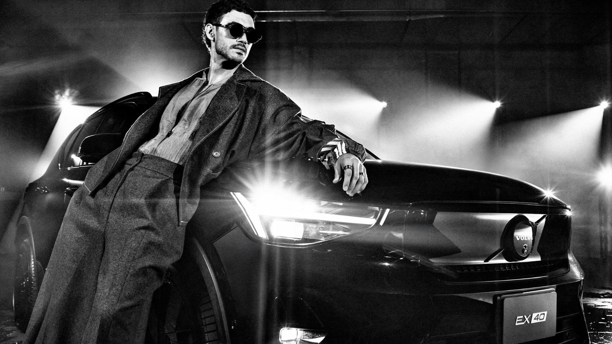
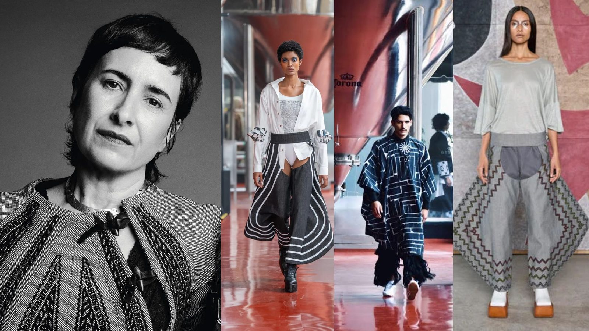

Datos rápidos
- Mercedes-Benz patrocinó la plataforma durante 17 años, desde 2006: 34 ediciones y más de mil desfiles.
- En 2025 se anunció la alianza con Volvo Car México y la plataforma pasó a llamarse Volvo Fashion Week México.
- Del 12 al 17 de octubre de 2026, la edición de CDMX se celebró en Casa Club y Estudios Maravilla.
Un adiós que dejó el lugar libre
Antes de Volvo, el nombre de una marca de autos ya estaba pegado a la moda mexicana. Mercedes-Benz México y Fashion Week México anunciaron el fin de su acuerdo de 17 años. La última edición bajo ese patrocinio fue en octubre de 2024, con 18 diseñadores y un enfoque en moda masculina.
Para Fashion Week México fue el cierre de una etapa larga. Cory Crespo, cofundador de la plataforma, dijo que el legado de Mercedes-Benz seguiría en el ecosistema creativo del país. Poco después, la plataforma se reinventó con una alianza con Volvo Car México.
Volvo llega con un discurso de propósito
Cuando se anunció la alianza, Dante Martínez, CMO de Volvo Cars México, resumió la idea así: “El lujo ahora es tener un propósito detrás.” Cory Crespo habló de un momento de “lujo atemporal”, y Raymundo Cavazos, director general de Volvo Car México, dijo que creen en la moda como un vehículo de cambio.
El anuncio traía también un guiño regional: Volvo Fashion Week abriría sus puertas a diseñadores de Colombia, Brasil y Argentina, bajo la idea de que el sur global compite mejor unido. Y un detalle divertido: se habló de los “Avengers de Volvo”, un grupo de caras de la marca que incluía a Luis Gerardo Méndez, Carla Souza, Benny Emmanuel, Alejandro Speitzer y Juanes.

Línea del tiempo
- 2006Mercedes-Benz inicia su patrocinio de Fashion Week México.
- Octubre de 2024Última edición con Mercedes-Benz: 18 diseñadores y enfoque en moda masculina.
- Abril de 2025Se anuncian la alianza con Volvo Car México y el nuevo nombre.
- Mayo de 2025Primera edición con Volvo. Carla Fernández cierra con DIVA.
- Octubre de 2025Campaña con Renata Notni y Santiago Giménez.
- Abril de 2026La plataforma llega a Guadalajara.
- Octubre de 2026Regreso a CDMX con Macarena Achaga y Alejandro Speitzer.
Cada edición, una cara nueva
Una de las constantes de la alianza ha sido cambiar de protagonistas en cada campaña. En mayo de 2025 fueron el actor Alberto Guerra y la supermodelo Isabeli Fontana; en octubre de 2025, Renata Notni y Santiago Giménez, con la mirada puesta en el camino al Mundial 2026; y en octubre de 2026, Macarena Achaga y Alejandro Speitzer, acompañados por modelos de Volvo.
Carla Fernández: de cerrar a inaugurar
Hay una historia que se cierra en círculo. Carla Fernández cerró la primera edición de Volvo Fashion Week, en mayo de 2025, con la colección DIVA, presentada en los muros industriales de una planta cervecera. En octubre de 2026 volvió, esta vez para abrir la semana con PACÍFICA, en Casa Club.

Qué significó
Cory Crespo había descrito la semana como un encuentro entre moda, diseño, educación, innovación, movilidad, tecnología e industria. Volvo fue el representante más claro de la movilidad y, en buena medida, de la tecnología. Otro aliado, Hisense, planteó en esta edición que la tecnología es hoy un nuevo lenguaje del lujo. Para la organización, tener a una automotriz como patrocinador principal fue una manera de darle cuerpo a esa idea.
Para Volvo, la moda ofreció una vitrina distinta a la de una exhibición automotriz. Rebeca Molho, gerente de Experiencia de Marca y Relaciones Públicas, explicó que la marca entiende el diseño como algo pensado alrededor de las personas, y que la semana le permite conectar con nuevas audiencias y dar visibilidad al talento mexicano. En las sedes exhibió tres modelos: el EX40, el XC60 y el EX90.
No es una fórmula exclusiva de México: Volvo ya había sido socio automotriz oficial de Melbourne Fashion Week, donde presentó el EX30 y organizó un desfile colectivo llamado Volvo Electric Runway.
La pregunta que queda
Queda por conocer cómo vivieron los asistentes la presencia de los autos: si fueron parte de la experiencia o un elemento de ambientación. Eso solo lo pueden contar quienes recorrieron las sedes, y sería muy valioso escucharlo de ellos.